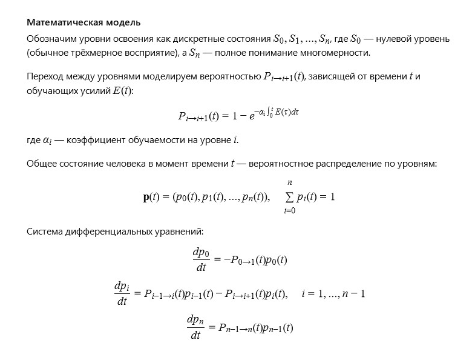

Автор: Валерий
Я видел сон, в котором Вселенная состояла не из материи, "вращающихся" вокруг друг друга элементарных частиц разной массы, а из абсолютно одинаковых по размеру и массе частиц, качающихся друг относительно друга. Материя образовывалась из групп таких частиц — например, группы из 2-х, 3-х, 5-ти, 13-ти или 21 частицы. Эти группы качались напротив друг друга и иногда обменивались частицами из других групп. В зависимости от количества групп на единицу объёма менялся химический состав и физические свойства материи. В таком мире можно было измерять минимальное и максимальное расстояние между частицами и группами, энергию, затраченную на покачивание внутри и между группами, а также физическую и химическую прочность материи.
В моём воображении есть Вселенная, где материя — это не просто массы и силы, а живой ритм и непрерывный танец частиц, подобно древним эху, отражающимся сквозь время и пространство. Здесь все элементарные частицы — одинаковы по размеру и массе, но каждая обладает уникальным внутренним импульсом, который задаёт её «мелодию» качания. Эти частицы объединяются в группы, как музыканты в оркестре, где каждая группа звучит своей гармонией — от дуэтов до целых хоров. Группы частиц колеблются, обмениваются импульсами и информацией, порождая новые комбинации мелодий. В этом бесконечном взаимодействии рождаются физические свойства: твердость — как звучание глубоких барабанов, пластичность — как нежный флейтовый мотив, тепло — как пульсирующая энергия струн. Расстояния между частицами — не фиксированы, а колеблются в зависимости от их ритмического согласия. Энергия покачивания — это не просто механика, а живой диалог, где каждая частица влияет на целое, и всё это рождает невероятное многообразие материи. Эта Вселенная — симфония, где каждая частица — музыкант, а космос — музыкальное произведение, меняющееся и развивающееся в бесконечном танце.
Как описать взаимодействие равных по массе и размеру частиц, которые образуют группы с разными размерами и сложностью?
Для описания взаимодействия таких частиц можно использовать теорию
сетевых динамических систем — модель, где частицы представлены узлами,
а связи между ними — рёбрами графа с переменной интенсивностью (весом).
Взаимодействия задаются функциями качания, зависящими от расстояний
и углов между частицами, а динамика — системой нелинейных
дифференциальных уравнений, моделирующих энергию покачивания и обмен частицами.
Какие параметры влияют на химический состав и физические свойства, исходя из распределения групп частиц?
Ключевыми параметрами будут:
-плотность частиц в объёме,
-размеры групп (количество частиц в группе),
-частота и амплитуда их покачиваний,
-вероятности обмена частицами между группами,
-статистическое распределение размеров групп.
Математически это можно моделировать через вероятностные распределения
(например, пуассоновские или биномиальные) для размеров групп
и стохастические процессы для обмена.
Как измерять физическую и химическую прочность материи, основанной на этих качающихся группах?
Физическая прочность может быть связана с энергоёмкостью связи между
частицами и амплитудой их колебаний — чем больше энергия покачивания,
тем устойчивее связь. Химическая прочность связана с вероятностью
устойчивого обмена частицами, которая может рассчитываться через
коэффициенты реакции в химической кинетике и динамике.
Можно ли построить математическую модель вероятности существования такой Вселенной?
Да, это возможно, хотя и крайне сложно. Такая модель будет комбинировать:
-статистические модели распределения и взаимодействия частиц и групп,
-нелинейные дифференциальные уравнения для динамики покачиваний,
-вероятностные модели химических реакций и переходов частиц между группами,
-и, возможно, эволюционные модели, учитывающие изменения этих параметров во времени.
Вероятность существования Вселенной с такими свойствами можно оценить через
вычислительную симуляцию: задаются начальные параметры и моделируется динамика
на большом количестве итераций, фиксируются устойчивые конфигурации.
На основании этого строится распределение вероятностей появления таких устойчивых состояний.
Модель опирается на статистику и химическое моделирование, учитывает концентрации, структуру молекул и реакцию рецепторов. С помощью машинного обучения можно повысить точность прогнозов до нужного уровня.
